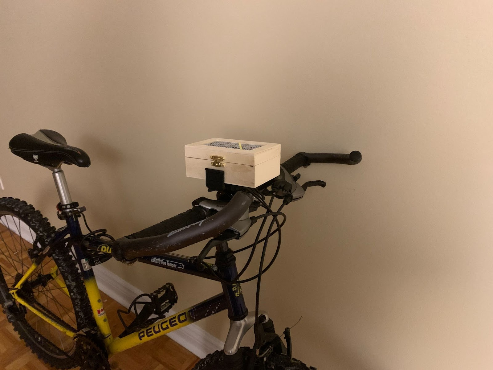

Design evolution
1. Add Bottom to deactivate and activate the alert device:
We add a button on the alert device to deactivate the alert device when it is buzzing. We consider the use case that users would get into a situation that a car will always be behind them and it will cause the system to detect a car is behind and cause the alert device to always buzz. Thus, we add a button to allow the user to freely deactivate the alert device and activate it.
2. Arduino communicate via bluetooth
In the alpha system we use jumper wire to establish communication between the two arduinos due to th e fact that we did not have any bluetooth component on our hand during the implementation. After the alpha system, we successfully integrate the bluetooth component inside our system and achieve the co mmunication between the two arduinos and it brings great benefit to the encapsulation.
3. Sensor detect range
After the continuation of development and searching, we came to an agreement to set the ultrasonic s ensor detect range to be 1.5 m. Since according to the current law, it is obligatory for the driver to maintain a 1.5m distance between the bike, so we would definitely want to warn the user when a ca r is approaching the user at this range and give them enough time to react.
4. Encapsulation box
In the alpha system we use the cardboard to build the box for encapsulation of the system. It has com e to our mind that using cardboard to build the box is unstable and easy to break. Thus, we decide t o switch to using stone clay to build the box for the sensor and wood box for the alert device. It is more stable and has more endurability and could allow our system to be performed in some more extreme conditions.
5. Alert stops after one second if we have a car always behind the bike
We include a new feature inside our system that when we inside a situation that a car always behind t he bike and it is also inside the detect range of our system such when a bike is waiting in front of the traffic light and a car is behind it, it will cause our alpha system to keep buzzing and blinking . We updated the system that it will only alert the user for one second and then it will stop. If th e car is out of the detect range and enters again, the system will alert the user again.
2. Prototype Revision
Encapsulated sensor:
Encapsulated alert device:
System when turned on:

install on the bike:

Demo for the System
1. Show the detect range and alerting duration when a car is inside the detect range.2. Show the alert device will stop if a car is always inside the detect range.
3. Show the button could interrupt the alert device
4. Simulation actually riding a bike and then a car is approaching(as safety issues and recording constraint we choose to let one of the teammates to pretend to be a car)
3. Refinement of User Manual
Our newest version user manual can be found here:
Our beta system user manual includes computer prototype and beta system instruction.